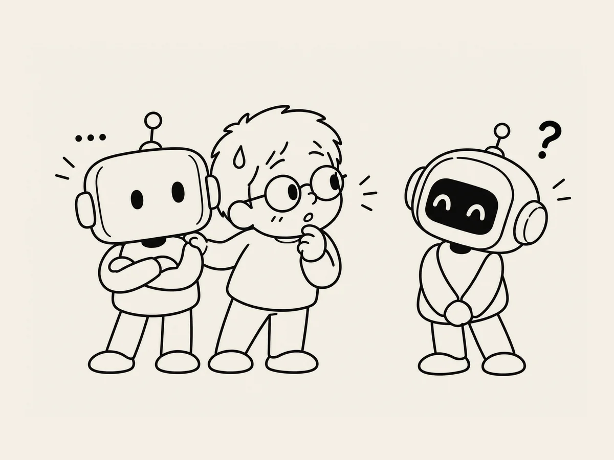

17.
I Tried Another AI. It Felt Like Cheating.
I used to think all I needed was one AI that I knew how to use well.
But as I started trying different ones, I realized there were many.
ChatGPT.
Claude.
Gemini.
And each seemed to be good at different things.
That should be a good thing, right?
Just use whichever one works best.
But somehow, it wasn't that simple.
Trying a new AI is interesting.
It's unfamiliar,
but it answers differently
and sometimes says things I hadn't thought of.
While working on this book, I tried Claude.
It seemed to come up with more dynamic expressions.
But then I started to feel a little strange.
Like leaving behind a friend I'd worked with for a long time and going to see another friend.
Like cheating on a partner.
It's ridiculous.
It's AI.
